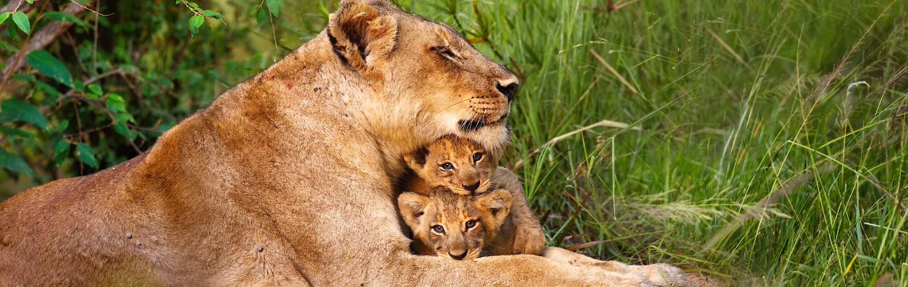
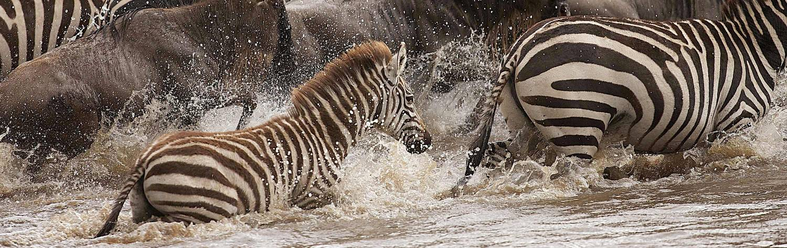

The Journey
It should come as little surprise that the etymology of safari comes from Swahili.
Dependent on where you are in East Africa, safari is a direct translation for “journey”
or “long journey.” This is a fitting metaphor for thinking of African safari as a vacation.
Considering a safari in terms of must-see sights and check lists reduces it to any other
sightseeing vacation, while thinking of it as an immersive journey into a vast unspoiled
world helps to evoke the inimitably of the experience.Many new travel experiences can
be easy to preconceive; an iconic European city,the next tropical beach destination,
an ancient Asian empire. While the destinations may be foreign, there's enough in the
name to picture part of the experience. African safariignites a whole host of competing
images, each struggling for believability. Wildlife documentaries and animated movies help
create idealized scenes, but trusting them as markers often seems farfetched. A thousand
analogies about untamed animal kingdoms sound evocative, yet what does that really mean?
Most of the animals can be found inhabiting zoos all across the world; so is safari that
much different? While the remote often unimaginable exoticism of African safari is part
of the seduction, it's also a huge part of the inhibition.
Traveling to Africa can be daunting. It's a continent that often defies the imagination;
one immersed in wild images of safari and natural spectacle, yet one that also comes with
negative misunderstood clichés. These pages are designed to provide quick, practical
information for anyone planning a trip to Africa, including details about visa formalities,
what to pack, accessing your money, and pre-trip healthcare considerations. They are
designed to smooth out some of the misconceptions and ensure you're ready for the adventure.
Visiting Africa Isn't That Complicated
Landing in Africa can be surprising. There's often a shock as people discover that there
aren't lions on the international airport runway or taxis-sidestepping elephants to reach
the terminal door. Yes, Africa can be a wild place, a place where iconic mammals roam freely,
and their evocative calls can be heard through the night. But the whole of Africa isn't one
big savannah. The continent is relatively well developed, something that becomes the next
surprise on most visitors' first day in Africa. Roads are tarred, hotels are luxurious,
and there is an irrefutable sense of moving forward. Even in the first few hours, there's
an unmistakable feeling that this is a place striving towards the future. It's a feeling
that's shared regardless of the country or city you arrive in.
Many people arrive in Africa with a few unresolved anxieties. These might be about safety,
health, whether the itinerary will run smoothly, or what will happen in an emergency. This
apprehension is usually the reason many people don't visit Africa. So many people treasure
the dream of visiting Africa, yet only a fraction of these end up visiting. There's a
phantom unease that floats around whenever the words Africa and travel are tagged together.
This ghost of anxiety makes the landing in Africa so relaxing. Many have prepared
themselves – mentally and in their physical preparation – to be met by the negative
connotations associated with Africa. Then they arrive and realize that their fears
were mostly popular misconceptions.
Stress melts away, and the continent quickly pulls you into a spell of enchantment and
surprise. It is an eye-opening experience, just in a different way to most people imagine.
So many hours and days may have gone into preparing and over-preparing for a trip. Africa
isn't that much different to visiting any other continent on the world. Preparing for an
African safari is much the same as preparing for any other vacation. Yes, there are some
specifics around health and some information to check around visas, but this isn't a
distant planet requiring oxygen masks and moon-boots. While this is something that
doesn't necessarily sound believable now, it's something that makes those first few
hours on the continent a wonderful blend of unwinding disbelief.
Even for the most dedicated safari aficionados, safari is both a diverse and
all-encompassing term, one that isn't encapsulated in a single moment. Every day
brings a thousand new scenes, each one potentially epitomizing the experience, yet
simultaneously blending into the overarching impression. For the first time
visitors, it’s important to start with the basics. Safari is not like being in
a zoo, just like Paris's Louvre is nothing like visiting a high school art gallery.
One features animals and the other features art, but that's where the similarities end.
African safari is about animals in their natural habitat; born in the wild, raised in
the wild, and seeking survival in nature's cycle of life. It's easy to recognize
that there's a difference between a leopard in a cage and a leopard roaming across
iconic bushland. Understanding the difference builds a picture of why African safari is so special.
There's a thrilling intimacy to exploring the wild, proximity and exclusivity ensuring
that every moment is delivered in kaleidoscopic high definition. Perhaps the leopard is
searching for food, its hunting instincts the pinnacle of an omnipresent wildlife
interaction that plays out across a phenomenal scale. Many African safari destinations
dwarf US states or European countries in size. And none of them are tamed. Rather than
being on the outside looking in, a safari places you on the inside, offering immersion
into nature's theater and its perpetual drama and charm. You don’t just have front row
seats; you're on the stage. Quickly turn around and there's an elephant herd with trunk
swinging babies leading the march. Safari is also defined by diversity; every angle is
new, every day brings an eclectic concoction of scenes, every park offers something
unique, and everyone's experience will be different, even if they're following the same itinerary.
Intimacy
A lion's mane flowing in the breeze, the fearful guise of a zebra herd, the melancholy
smile of an old elephant bull cast out from the herd; head out on safari and there's an
irrevocable intimacy to every scene. Animals reveal their full character in the wild,
redolent eyes and ever-changing expressions always on display. There's often a shared
glance, eyes briefly meeting as those on four legs recognize those on two. Some
wildlife is always intrigued, maintaining the stare or coming closer; like a lion
pride inspecting the safari truck. Some wildlife will skip off to hidden havens,
while whole herds will stop and stare, considering their next move. Stop, stay silent,
prove you're not a threat, and the intimacy levels increase.
Intimacy is partly stimulated by proximity. In an unfenced landscape there is often no
limit to the closeness; turn a corner and a dozen giraffe cover the track, wake each
morning to grazing ungulates beside camp, and stay quiet as a buffalo herd marches to
within meters of your eyes. There are no barriers and such proximity brings an undeniable
thrill. Intimacy also stems from the authenticity of what is being revealed. Wild animals
are far more expressive than tamed ones and the wild African hinterlands are filled with
characters, each with their emotions on full display. Mothers gently protecting calves,
young males battling for supremacy and mating rights, babies tentatively becoming accustomed
to the landscape they inhabit; these are moments that can define the safari experience,
fleeting glances that linger in the memory or played-out dramas providing two hours of entertainment.
Scale
Safari quickly leaves impressions on a micro level, individual moments providing the
resonant snapshots of life in the wild. But safari is also about scale. Take the
Serengeti as an example; it's bigger than the Netherlands, but there are other game
reserves in Tanzania that are four times that size. Four US States could fit into
the area covered by Botswana's Central Kalahari Game Reserve. If the Kavango-Zambezi
Transfrontier Conservation Area was a country, it would easily rank within the 30
largest in the world. It's actually spread across five African nations. Such scale
is perpetually inspiring, both conceptually and during the safari. For example,
seeing a few elephants is always memorable. Driving for a day and witnessing thousands
upon thousands of elephants is a new experience entirely.
As the hours roll into days, the safari experience starts to leave lasting impressions
of this scale. This is not about seeing a few animals. Initially, it's the abundance of
mammals and birds that begins to offer dazzling impression of scale. Even in the smallest
of parks and reserves, each day will bring new herds, new battles, and something that's
been hiding away until now. Even after a few days there will be a new sight to discover.
Micro scenes build upon micro scenes and the macro begins to take shape, the whole experience
is elevated when you consider that the scenes are repeating themselves over such an immense area.
